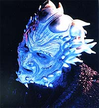
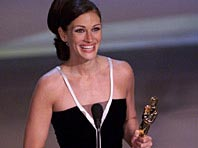

|
Jornada
nas Estrelas e o Oscar
 Vez
por outra levantada a questo sobre o fato de Jornada nas
Estrelas nunca ter concorrido e ganho nas principais categorias
do Oscar. O argumento mais comum que os filmes de fico
cientfica somente so valorizados nos aspectos tcnicos, como os
efeitos visuais, som etc., sendo desprezados quanto aos aspectos
dramticos. Vez
por outra levantada a questo sobre o fato de Jornada nas
Estrelas nunca ter concorrido e ganho nas principais categorias
do Oscar. O argumento mais comum que os filmes de fico
cientfica somente so valorizados nos aspectos tcnicos, como os
efeitos visuais, som etc., sendo desprezados quanto aos aspectos
dramticos.
 Na
histria da fico no cinema, Jornada nas Estrelas foi
indicado em categorias como direo de arte ("Jornada nas
Estrelas - The Motion Picture"), efeitos sonoros, trilha
sonora, fotografia ("Jornada nas Estrelas IV - A Volta Para
Casa"), ou ainda maquiagem, efeitos visuais ou edio de
efeitos sonoros ("Jornada nas Estrelas VI - A Terra
Desconhecida").
Alguns se lamentam do fato de que estes filmes tiveram bom roteiro,
boa direo e bom desempenho dos atores principais e coadjuvantes,
levando-os a merecer alguma indicao. Alm daqueles filmes,
alguns gostariam de ver outras indicaes em categorias
consideradas mais importantes para ostentar a esttua dourada
reluzente, mas nada disso deu condies para convencer os membros
da Academia de Cinema de Hollywood.
No entanto, h outro argumento menos popular e, a meu ver, mais
consistente. Jornada uma obra essencialmente televisiva. O
cinema um "algo mais". Por isso, ganhar o Oscar
coisa secundria. Isto se explica porque o desenvolvimento
dramtico feito ao longo de anos de produo, com um grupo
razoavelmente grande de diretores e roteiristas, que partem de uma
"bblia" organizada pelos criadores da srie. O
contedo das aventuras voltado mais para explorar novas
situaes do que para os tripulantes da Frota Estelar e os seus
personagens. Nisso, muita coisa boa tem sido feita, outras so
razoveis e sofrveis. No geral, o resultado acima da mdia do
que se v por a, segundo pblico e crtica. Este procedimento
bem diferente de criar um argumento, roteiro ou adapt-lo de um
conto ou romance para apresent-lo nas telas de todo o mundo.
O cinema s entrou na histria de Jornada por dois fatores
conjugados. A Serie Clssica tinha sido interrompida,
durando um pouco mais do que a metade do previsto, mas virou um
fenmeno de massa anos depois. O outro motivo foi George Lucas, que
se deu muito bem com seu inicialmente despretencioso bangue-bangue
sideral, "Guerra nas Estrelas". Isto abriu os olhos da
Paramount para aproveitar mais uma faixa de mercado.
O desenvolvimento das aventuras de Kirk e sua turma para dar um
desfecho do que passara na televiso. Com Picard e a Nova
Gerao, a situao prevalece, colocando uma azeitona em
nossa empada a cada dois anos, mais ou menos.
Para Jornada mais importante ganhar o Hugo, a maior
premiao de fico cientfica da televiso norte-americana, o
Emmy ou o Globo de Ouro, que reconhecem e valorizam as produes
da televiso.
Agora,
vamos falar srio! Seria o Oscar um prmio to importante assim?!
Temos que ver tambm outros prmios do cinema, como o do festival
de Berlim, Cannes, Espanha, Cuba e at o norte-americano de
Sundance. Estes so eventos mais preocupados em premiar filmes de
maior qualidade, apesar de alguns escorregarem um pouco na casca de
banana do circuito hollywoodiano.
Jornada teria muitssimo menos chance nesses festivais
porque se trata de outro tipo de filme. S que o Oscar ficou sendo
valorizado demais, no precisaria tanto. Ele no mais do que um
prmio de uma categoria profissional que faz uma festa, muitas
vezes ridcula, prestigiada para arrecadar mais uns cobres para os
estdios: quem viu, v de novo; quem no viu, sai correndo pra
ver.

claro, serve tambm para premiar os artistas, muitos de qualidade
duvidosa, e aumentar seus salrios, como Julia Roberts e um monte
de rostinhos bonitinhos de estrelas e gals. Quando d na
conscincia, a Academia resolve premiar de forma especial alguns
diretores e atores que valem mesmo a pena. Tem gente que ganha e nem
vai l receber, como j fizeram Marlon Brando e Woody Allen.
Enfim, deixem esse negcio de Oscar pra l, porque, como j dizia
Shakespeare: muito barulho por nada.
Cludio
Silveira escreve regularmente sobre os filmes com
exclusividade para o Trek Brasilis
|